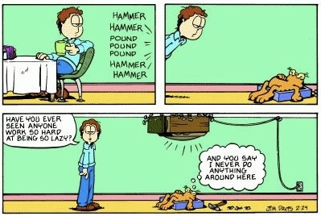

pacman::p_load(tidyverse, magrittr, rstatix,
janitor, purrr, furrr, see,
readxl, tictoc, multcompView,
parameters, scales,
conflicted)
conflict_prefer("select", "dplyr")
conflict_prefer("filter", "dplyr")
conflict_prefer("mutate", "dplyr")
conflict_prefer("extract", "magrittr")13 Ein purrr Cookbook
Letzte Änderung am 28. September 2023 um 14:04:26
“Until I realized, it is the struggle itself that is most important. We must strive to be more than we are, Lal. It does not matter that we will never reach our ultimate goal. The effort yields its own rewards.” — Lieutenant Commander Data, Star Trek: The Next Generation, The Offspring
Was soll das hier? Was für ein Kochbuch?

Dieses Kapitel dient dazu fortgeschrittene Programmierung in R zu präsentieren. Es ist eine Sammlung von Code und Rezepten, die ich immer mal wieder nutze. Deshalb hat dieses Kapitel auch den Titel Cookbook. Teilweise nutze ich den komplexeren Code bei der Auswertung von den Beispielen. Wenn dich also Programmieren interessiert, dann kannst du dir hier noch was anschauen. Das Kapitel ist eigentlich nie fertig, da ich sicherlich immer mal wieder was ergänzen werde.
In diesem Kapitel geht es hauptsächlich um Iterationen. Das heißt wir wollen immer das Gleiche auf verschiedene unterschiedliche Dinge anwenden. In unserem Fall ist das “Gleiche” eine Funktion function(...){} in R und das “Unterschiedliche” sind Einträge in einer Liste lst() oder einem Datensatz tibble(). Wir wollen also zum Beispiel auf verschiedenen Datensätzen mit fünf unterschiedlichen Outcomes immer wieder eine multiple lineare Regression rechnen. Anstatt also per Copy&Paste fünfmal den Code zu kopieren, wollen wir alle Datensätze in einer Liste speichern und die Liste dann in einem Schwung auswerten. Das geht natürlich nur eingeschränkt. Wir müssen ja noch beachten, dass jedes Outcome einer anderen Verteilung folgen könnte.
Wie wir die Daten in Gruppen zusammenfassen ist unterschiedlich möglich. Ich präsentiere hier zum einen die Funktion split(), die Daten in Listen aufteilt sowie die Funktion nest() die Daten in ein tibble zusammenfaltet. Beide Varianten haben so ihre Vor- und Nachteile. Wie immer kommt es dann auf die Anwendung an und was du machen willst.
Es lohnt sich hierbei die Listen bzw. die Datensätze, über die dann iteriert werden soll, so gleich wie irgendwie möglich zu bauen. Das heißt, dass wir die gleiche Anzahl an Spalten mit den gleichen Spaltennamen vorliegen haben wollen. Das erleichtert dann die spätere Anwendung mit map().
13.1 Genutzte R Pakete
Wir wollen folgende R Pakete in diesem Kapitel nutzen.
Am Ende des Kapitels findest du nochmal den gesamten R Code in einem Rutsch zum selber durchführen oder aber kopieren.
13.2 Die Daten
Als Datenbeispiel schauen wir uns einmal ein einfaktoriellen Datensatz an und suchen uns auch nur acht Zeilen und drei Outcomes raus. Wir könnten die Analyse auch über den vollen Datensatz rechnen, aber dann wird hier alles sehr voll. Es geht ja hier mehr um die Demonstration.
soil_tbl <- read_excel("data/soil_1fac_data.xlsx") %>%
mutate(variante = str_c(variante, "_", amount),
variante = as_factor(variante),
across(where(is.numeric), round, 2)) %>%
select(-amount) %>%
extract(1:8, 1:4) %>%
pivot_longer(cols = fe:no3,
names_to = "outcome",
values_to = "rsp") Als zweiten Datensatz nehmen wir noch eine zweifaktorilles Design mit einem Behandlungs- und einem Blockeffekt. Darüberhinaus haben wir dann noch verschiedene Outcomes und diese Outcomes dann auch an zwei Orten, einmal im Blatt und einmal im Stiel, gemessen. Das heißt, wir haben immer eine Outcome/Sample-Kombination vorliegen. Bei drei Outcomes und zwei Messorten macht das dann sechs Kombinationen auf denen wir dann immer unsere zweifaktoriellen Analysen rechnen wollen.
spinach_tbl <- read_excel("data/spinach_metal_data.xlsx") %>%
mutate(trt = as_factor(trt),
sample = as_factor(sample),
block = as_factor(block)) %>%
pivot_longer(cols = fe:zn,
names_to = "outcome",
values_to = "rsp") %>%
mutate(outcome = as_factor(outcome))13.3 Daten aufteilen…
In R haben wir zwei Möglichkeiten für map() die Daten aufzuteilen. Klar, wir können die Aufteilung sicherlich auch mit anderen Funktionen machen, aber diese beiden Funktionen sind sehr nützlich.
13.3.1 … mit split()
Mit der Funktion split() können wir einen Datensatz nach einer Faktorspalte in eine Liste aufspalten. Die Liste ist dann auch gleich so benannt wie das Level es Faktors für das wir die Aufteilung gemacht haben. Die Benamung der Liste ist dann praktisch, wenn wir später wieder einen Datensatz aus den Ergebnissen bauen.
soil_lst <- soil_tbl %>%
split(.$outcome)
soil_lst$fe
# A tibble: 8 × 3
variante outcome rsp
<fct> <chr> <dbl>
1 Holzfasern_0 fe 0.26
2 Holzfasern_0 fe 0.33
3 Holzfasern_0 fe 0.27
4 Holzfasern_0 fe 0.31
5 Torf_30 fe 0.46
6 Torf_30 fe 0.37
7 Torf_30 fe 0.28
8 Torf_30 fe 0.5
$k
# A tibble: 8 × 3
variante outcome rsp
<fct> <chr> <dbl>
1 Holzfasern_0 k 3.7
2 Holzfasern_0 k 3.66
3 Holzfasern_0 k 3.83
4 Holzfasern_0 k 3.66
5 Torf_30 k 2.89
6 Torf_30 k 3.41
7 Torf_30 k 2.94
8 Torf_30 k 2.89
$no3
# A tibble: 8 × 3
variante outcome rsp
<fct> <chr> <dbl>
1 Holzfasern_0 no3 3.28
2 Holzfasern_0 no3 3.24
3 Holzfasern_0 no3 3.64
4 Holzfasern_0 no3 3.24
5 Torf_30 no3 5.02
6 Torf_30 no3 9.44
7 Torf_30 no3 8.71
8 Torf_30 no3 5.0213.3.2 … mit nest()
Wenn wir mehr als eine Gruppierungsspalte haben, dann können wir die Funktion nest() nutzen. In unserem Beispiel haben wir die Spalte outcome und sample. Für jede Kombination der beiden Spalte wollen wir dann jeweils ein Modell rechnen. Hier meine ich mit Modell eine lineare Regression und dann eine ANOVA. Als erstes müssen wir unsere Daten gruppieren und dann können wir die Daten nesten. Mit unnest() lässt sich dann die genestete Struktur wieder in einen normalen Datensatz zurückführen.
spinach_nest_tbl <- spinach_tbl %>%
group_by(sample, outcome) %>%
nest()
spinach_nest_tbl# A tibble: 6 × 3
# Groups: sample, outcome [6]
sample outcome data
<fct> <fct> <list>
1 leaf fe <tibble [28 × 3]>
2 leaf cd <tibble [28 × 3]>
3 leaf zn <tibble [28 × 3]>
4 stem fe <tibble [28 × 3]>
5 stem cd <tibble [28 × 3]>
6 stem zn <tibble [28 × 3]>13.4 Mit purrr über Daten
Das R Paket purrr erlaubt es sehr effizient immer das Gleiche auf Listeneinträgen oder genereller auf Daten anzuwenden. Wir können uns dabei selber eine Funktion schreiben oder aber schon implementierte Funktionen anwenden. Gehen wir einmal alle Funktionen durch. Wir werden hier nicht alle zeigen, aber es ist gut einmal zu wissen, welche Funktionen es gibt.
Schaue auch mal in das Cheat Sheet des R Paketes purrr rein: Apply functions with purrr::cheat sheet
13.4.1 Mit map() auf Listeneinträgen
Wir können die Funktion map() und deren verwandete Funktionen nutzen um zügig über Listen andere Funktionen anzuwenden.
map()erlaubt über eine Liste von Datensätzen ein Funktion anzuwenden. Dabei können wir dann die einzelnen Listeneinträge über.xan die Funktionen weitergeben. Siehe hierzu auch Basic map functions.map2()erlaubt es über zwei gleichlange Vektoren zu laufen. Wir können hier zwei Optionen in der Form.x,.yan die Funktion weitergeben. Siehe hierzu auch Map with multiple inputs.pmap()kann nun über eine Liste an Vektoren laufen und somit mehrere Inputoptionen verarbeiten. Damit istpmap()die Generalisierung dermap()Funktion. Siehe hierzu auch Map with multiple inputs.walk()ist ein silentmap(). Damit können wir Daten in eine Datei schreiben, ohne ein Output wieder zubekommen.imap()können wir nutzen, wenn wir den Index \(i\) wieder haben wollen. Das heißt, wir wollen über einen Vektor laufen und brauchen dafür den Index. Hier hilft dieimap()Familie.modify()können wir anwenden, wenn wir nur Spalten modifizieren oder mutieren wollen. Wir haben einen Datensatz und wollen allecharacterSpalten in einen Faktor umwandeln. Siehe hierzu auch Modify elements selectively.
Schauen wir uns die Anwendung von der Funktion map() auf eine Liste an. In folgenden Code entfernen wir einmal in jedem Listeneintrag die Spalte outcome. Dann lassen wir uns von jedem Listeneintrag die erste Zeile wiedergeben.
soil_lst %>%
map(select, -outcome) %>%
map(head, 1)$fe
# A tibble: 1 × 2
variante rsp
<fct> <dbl>
1 Holzfasern_0 0.26
$k
# A tibble: 1 × 2
variante rsp
<fct> <dbl>
1 Holzfasern_0 3.7
$no3
# A tibble: 1 × 2
variante rsp
<fct> <dbl>
1 Holzfasern_0 3.28Wir können zum einen map(head, 1) schreiben oder aber den Listeneintrag als .x direkt in die Funktion weiterleiten. Dann schreiben wir map(~head(.x, 1)) und müssen noch die Tilde ~ vor die Funktion setzen.
soil_lst %>%
map(~head(.x, 1))$fe
# A tibble: 1 × 3
variante outcome rsp
<fct> <chr> <dbl>
1 Holzfasern_0 fe 0.26
$k
# A tibble: 1 × 3
variante outcome rsp
<fct> <chr> <dbl>
1 Holzfasern_0 k 3.7
$no3
# A tibble: 1 × 3
variante outcome rsp
<fct> <chr> <dbl>
1 Holzfasern_0 no3 3.28Die richtige Stärke entwickelt dann map(), wenn wir mehrere Funktionen hineinander schalten. In unserem Fall rechnen wir einen Games-Howell Test und wollen uns dann das compact letter display wiedergeben lassen. Da wir am Ende dann einen Datensatz haben wollen, nutzen wir die Funktion bind_rows() um die Listeneinträge in einen Datensatz zusammen zukleben.
soil_lst %>%
map(~games_howell_test(rsp ~ variante, data = .x)) %>%
map(~mutate(.x, contrast = str_c(.x$group1, "-", .x$group2))) %>%
map(pull, p.adj, contrast) %>%
map(~multcompLetters(.x)$Letters) %>%
bind_rows(.id = "outcome") # A tibble: 3 × 3
outcome Holzfasern_0 Torf_30
<chr> <chr> <chr>
1 fe a a
2 k a b
3 no3 a a Wir können auch auch auf genesteten Daten die Funktion map() anwenden. In diesem Fall belieben wir die ganze Zeit in einem tibble. Wir lagern unsere Ergebnisse sozusagen immer in einer Zelle und können auf diese Einträge dann immer wieder zugreifen. Einmal zu Demonstration rechnen wir sechs Mal ein lineares Modell mit der Funktion lm() und speichern das Ergebnis in der Spalte model. Wir haben jetzt dort jeweils <lm> stehen. Damit wissen wir auch, dass wir dort unser Modell drin haben. Wir können jetzt auf der Spalte model weiterechnen und uns neue Spalten mit Ergebnissen erschaffen.
spinach_nest_tbl %>%
mutate(model = map(data, ~lm(rsp ~ trt + block, data = .x)))# A tibble: 6 × 4
# Groups: sample, outcome [6]
sample outcome data model
<fct> <fct> <list> <list>
1 leaf fe <tibble [28 × 3]> <lm>
2 leaf cd <tibble [28 × 3]> <lm>
3 leaf zn <tibble [28 × 3]> <lm>
4 stem fe <tibble [28 × 3]> <lm>
5 stem cd <tibble [28 × 3]> <lm>
6 stem zn <tibble [28 × 3]> <lm> Im Folgenden rechnen wir ein lineares Modell, dann eine ANOVA und lassen uns das Ergebnis der ANOVA mit der Funktion model_parameters() aufhübschen. Wie du siehst, geben wie immer den Spaltennamen eine Funktion weiter. Dann wählen wir noch die Spalten, die wir dann unnesten wollen.
spinach_nest_tbl %<>%
mutate(model = map(data, ~lm(rsp ~ trt + block, data = .x))) %>%
mutate(anova = map(model, anova)) %>%
mutate(parameter = map(anova, model_parameters)) %>%
select(sample, outcome, parameter) Zum Abschluss nutzen wir die Funktion unnest() um uns die aufgehübschten Ergebnisse der ANOVA wiedergeben zu lassen. Dann will ich noch, dass die Namen alle klein geschrieben sind und auch sonst sauber sind. Dafür nutze ich dann die Funktion clean_names(). Abschließend filtere ich und runde ich noch die Ergebnisse. Am Ende will ich dann nur die Kombinationen aus sample und outcome haben sowie den \(p\)-Wert aus der ANOVA.
spinach_nest_tbl %>%
unnest(parameter) %>%
clean_names() %>%
mutate(across(where(is.numeric), round, 2)) %>%
filter(parameter != "Residuals") %>%
select(sample, outcome, parameter, p)# A tibble: 12 × 4
# Groups: sample, outcome [6]
sample outcome parameter p
<fct> <fct> <chr> <dbl>
1 leaf fe trt 0
2 leaf fe block 0.05
3 leaf cd trt 0.05
4 leaf cd block 0
5 leaf zn trt 0.42
6 leaf zn block 0.29
7 stem fe trt 0.02
8 stem fe block 0.02
9 stem cd trt 0.33
10 stem cd block 0
11 stem zn trt 0.51
12 stem zn block 0 Hier noch ein weiteres Beispiel für split(), nest() und nest_by() zum Ausprobieren und rumspielen. Wir wollen für hier einmal auf ganze vielen Behandlungen den Shapiro-Wilk-Tests für die Abweichung von der Normalverteilung rechnen. Dazu laden wir uns einmal die Daten clove_germ_rate.xlsx.
clove_tbl <- read_excel("data/clove_germ_rate.xlsx") %>%
mutate(clove_strain = as_factor(clove_strain),
germ_rate = as.numeric(germ_rate))Wir rechnen einmal die Shapiro-Wilk-Tests über die Funktion split() und dann einer Liste.
clove_tbl %>%
split(.$clove_strain) %>%
map(~shapiro.test(.x$germ_rate)) %>%
map(tidy) %>%
bind_rows(.id = "test") %>%
select(test, p.value) %>%
mutate(decision = ifelse(p.value <= 0.05, "reject normal", "normal"),
p.value = pvalue(p.value, accuracy = 0.001))# A tibble: 20 × 3
test p.value decision
<chr> <chr> <chr>
1 standard 0.272 normal
2 west_rck_1 0.272 normal
3 south_III_V 0.855 normal
4 west_rck_2_II 0.653 normal
5 comb_001 0.103 normal
6 western_4 0.849 normal
7 north_549 0.855 normal
8 subtype_09 0.983 normal
9 subtype_III_4 0.051 normal
10 ctrl_pos 0.992 normal
11 ctrl_7 0.683 normal
12 trans_09_I 0.001 reject normal
13 new_xray_9 0.406 normal
14 old_09 0.001 reject normal
15 recon_1 0.100 normal
16 recon_3456 0.001 reject normal
17 east_new 0.907 normal
18 east_old 0.161 normal
19 south_II_U 0.048 reject normal
20 west_3_cvl 0.272 normal Dann das selbe nochmal mit der Funktion nest_by(), die jetzt Vektoren generiert.
clove_tbl %>%
nest_by(clove_strain) %>%
mutate(shapiro = map(data, ~shapiro.test(.x)),
clean = tidy(shapiro)) %>%
reframe(clean)# A tibble: 20 × 4
clove_strain statistic p.value method
<fct> <dbl> <dbl> <chr>
1 standard 0.863 0.272 Shapiro-Wilk normality test
2 west_rck_1 0.863 0.272 Shapiro-Wilk normality test
3 south_III_V 0.972 0.855 Shapiro-Wilk normality test
4 west_rck_2_II 0.940 0.653 Shapiro-Wilk normality test
5 comb_001 0.801 0.103 Shapiro-Wilk normality test
6 western_4 0.971 0.849 Shapiro-Wilk normality test
7 north_549 0.972 0.855 Shapiro-Wilk normality test
8 subtype_09 0.995 0.983 Shapiro-Wilk normality test
9 subtype_III_4 0.763 0.0511 Shapiro-Wilk normality test
10 ctrl_pos 0.998 0.992 Shapiro-Wilk normality test
11 ctrl_7 0.945 0.683 Shapiro-Wilk normality test
12 trans_09_I 0.630 0.00124 Shapiro-Wilk normality test
13 new_xray_9 0.895 0.406 Shapiro-Wilk normality test
14 old_09 0.630 0.00124 Shapiro-Wilk normality test
15 recon_1 0.799 0.0996 Shapiro-Wilk normality test
16 recon_3456 0.630 0.00124 Shapiro-Wilk normality test
17 east_new 0.981 0.907 Shapiro-Wilk normality test
18 east_old 0.827 0.161 Shapiro-Wilk normality test
19 south_II_U 0.760 0.0476 Shapiro-Wilk normality test
20 west_3_cvl 0.863 0.272 Shapiro-Wilk normality testUnd nochmal mit der Pipe von group_by() zu nest(). Die Funktion nest() hate auch eine .by =-Option, so dass wir auch den Schritt mit group_by() weglassen könnten.
clove_tbl %>%
group_by(clove_strain) %>%
nest() %>%
mutate(shapiro = map(data, ~shapiro.test(.x$germ_rate)),
clean = map(shapiro, tidy)) %>%
unnest(clean)# A tibble: 20 × 6
# Groups: clove_strain [20]
clove_strain data shapiro statistic p.value method
<fct> <list> <list> <dbl> <dbl> <chr>
1 standard <tibble [4 × 1]> <htest> 0.863 0.272 Shapiro-Wilk normal…
2 west_rck_1 <tibble [4 × 1]> <htest> 0.863 0.272 Shapiro-Wilk normal…
3 south_III_V <tibble [4 × 1]> <htest> 0.972 0.855 Shapiro-Wilk normal…
4 west_rck_2_II <tibble [4 × 1]> <htest> 0.940 0.653 Shapiro-Wilk normal…
5 comb_001 <tibble [4 × 1]> <htest> 0.801 0.103 Shapiro-Wilk normal…
6 western_4 <tibble [4 × 1]> <htest> 0.971 0.849 Shapiro-Wilk normal…
7 north_549 <tibble [4 × 1]> <htest> 0.972 0.855 Shapiro-Wilk normal…
8 subtype_09 <tibble [4 × 1]> <htest> 0.995 0.983 Shapiro-Wilk normal…
9 subtype_III_4 <tibble [4 × 1]> <htest> 0.763 0.0511 Shapiro-Wilk normal…
10 ctrl_pos <tibble [4 × 1]> <htest> 0.998 0.992 Shapiro-Wilk normal…
11 ctrl_7 <tibble [4 × 1]> <htest> 0.945 0.683 Shapiro-Wilk normal…
12 trans_09_I <tibble [4 × 1]> <htest> 0.630 0.00124 Shapiro-Wilk normal…
13 new_xray_9 <tibble [4 × 1]> <htest> 0.895 0.406 Shapiro-Wilk normal…
14 old_09 <tibble [4 × 1]> <htest> 0.630 0.00124 Shapiro-Wilk normal…
15 recon_1 <tibble [4 × 1]> <htest> 0.799 0.0996 Shapiro-Wilk normal…
16 recon_3456 <tibble [4 × 1]> <htest> 0.630 0.00124 Shapiro-Wilk normal…
17 east_new <tibble [4 × 1]> <htest> 0.981 0.907 Shapiro-Wilk normal…
18 east_old <tibble [4 × 1]> <htest> 0.827 0.161 Shapiro-Wilk normal…
19 south_II_U <tibble [4 × 1]> <htest> 0.760 0.0476 Shapiro-Wilk normal…
20 west_3_cvl <tibble [4 × 1]> <htest> 0.863 0.272 Shapiro-Wilk normal…13.4.2 Weitere Funktionen wie keep, reduce und Co.
Im Folgenden nochmal eine Sammlung von weiteren Funktionen, die ich im Rahmen meiner Data Science Analysen dann immer mal wieder nutze und gerne vergesse. Da aber die Funktionen so praktisch sind, habe ich mir mal alles hier mit aufgeschrieben. Tja, teilweise ist das Skript hier auch eine große Fundgrube für mich.
Das Data Wrangling with dplyr and tidyr - Cheat Sheet ist auch immer eine gute Hilfe. Auch ist das Apply functions with purrr Cheat - Sheet ist auch immer ein Blick wert.
Wenn ich einen Vektor habe mit Namen, der teilweise aus map() herauskommt, dann kann ich den Vektor über enframe() und der Dokumentation zu enframe() in ein tibble umwandeln.
named_vec <- c(dog = 2, cat = 4, dog = 3, fox = 5)
enframe(named_vec)# A tibble: 4 × 2
name value
<chr> <dbl>
1 dog 2
2 cat 4
3 dog 3
4 fox 5Das ist manchmal extrem praktisch, wenn eine Liste nur einen Eintrag hat. Dann können wir über unlist() einen benamten Vektor bauen und den Vektor dann in einen tibble umwandeln.
lst(id237189 = 4,
id7629w0 = 5,
id790182 = 3) %>%
unlist() %>%
enframe()# A tibble: 3 × 2
name value
<chr> <dbl>
1 id237189 4
2 id7629w0 5
3 id790182 3Ich habe häufig Listen und möchte nach gewissen Merkmalen die Listeneinträge filtern - manchmal auch Datensätze. Hier hilft die Funktion keep() und der Dokumentation zu keep() mit der ich dann Listeneinträge nach einer Funktion, die TRUE oder FALSE ausgibt filtern kann. Das Gange geht dann mit discard() auch in der Verneinung von keep(). Ich will in der Folge nur die Listeneinträge behalten in denen das entsprechende tibble im Listeneintrag mehr als zwei Zeilen hat.
data_lst <- lst(dog_tbl = tibble(id = c("id786", "id987", "id231", "id566"),
dog = rep("dog", 4)),
cat_tbl = tibble(id = c("id786", "id566"),
cat = rep("cat", 2)),
fox_tbl = tibble(id = c("id786", "id987", "id776", "id129", "id231", "id566"),
fox = rep("fox", 6)))
data_lst %>%
keep(\(x) nrow(x) > 2)$dog_tbl
# A tibble: 4 × 2
id dog
<chr> <chr>
1 id786 dog
2 id987 dog
3 id231 dog
4 id566 dog
$fox_tbl
# A tibble: 6 × 2
id fox
<chr> <chr>
1 id786 fox
2 id987 fox
3 id776 fox
4 id129 fox
5 id231 fox
6 id566 fox Wenn ich in einer Liste Einträge finde, die keinen Werte haben, also NULL sind, dann kann ich über die Funktion compact() die leeren Listeneinträge einfach entfernen.
data_null_lst <- lst(dog_tbl = tibble(animal = rep("dog", 4)),
cat_tbl = NULL,
fox_tbl = NULL)
data_null_lst %>%
compact()$dog_tbl
# A tibble: 4 × 1
animal
<chr>
1 dog
2 dog
3 dog
4 dog Die Funktion reduce und der Dokumentation zu reduce() ermöglicht es mit Listeneinträge zu kombinieren. Wenn ich alle Listeneinträge nur untereinander packen will, dann nutze ich die Funktion bind_rows() oder gleich map_dfr().
data_lst %>%
reduce(left_join, by = "id")# A tibble: 4 × 4
id dog cat fox
<chr> <chr> <chr> <chr>
1 id786 dog cat fox
2 id987 dog <NA> fox
3 id231 dog <NA> fox
4 id566 dog cat fox Wenn alle Listeneinträge nach einer Spalte zusammengführt werden sollen, dann Nutze ich die Funktion left_join(). Weiteres zum Zusammenführen (eng. merge) von Datensätzen in der Dokumentation zu join(). Beim Mergen von Datensätzen muss man recht viel Nachdenken und überlegen was man eigentlich will, deshalb kann ich hier keine vollständige Abhandlung liefern.
sort_vec <- c("cat", "fox", "dog")
data_tbl <- tibble(animal = c("dog", "cat", "fox"),
jump_length = c(4.1, 5.8, 6.2))
data_tbl# A tibble: 3 × 2
animal jump_length
<chr> <dbl>
1 dog 4.1
2 cat 5.8
3 fox 6.2Dann möchte ich meist noch einen Datensatz nach einer externen Spalte sortieren. Dafür nutze ich die Funktion arrange() wie folgt.
data_tbl %>%
arrange(factor(animal, levels = sort_vec))# A tibble: 3 × 2
animal jump_length
<chr> <dbl>
1 cat 5.8
2 fox 6.2
3 dog 4.1Manchmal möchte man dann auch einem Long-Format wieder ein Wide-Format machen. Zum einen natürlich wieder der Verweis auf die Funktion pivot_wider() und der Dokumentation zu pivot_wider(). Wir nutzen hier aber auch das R Paket glue und der Dokumentation zu glue um uns die Spaltennamen zu bauen. In unserem Beispiel kriegt jede Kuh zwei Zeilen mit Werten. Wir wollen aber den die Spalte type auflösen und nur noch eine Zeile pro Kuh vorliegen haben.
cow_tbl <- tibble(lom = c("276000355496007", "276000355496007"),
type = c("val", "lal"),
rz = c(128, 254),
lfd_nr = c(3, 4))
cow_tbl# A tibble: 2 × 4
lom type rz lfd_nr
<chr> <chr> <dbl> <dbl>
1 276000355496007 val 128 3
2 276000355496007 lal 254 4Wir nehmen also die Namen aus der Spalte type und kleben (eng. glue) erst den Namen der Spalte und dann mit einem Unterstrich getrennt den Namen der beiden anderen Spalten rz und lfd_nr dran. Wir wollen ja auch die Werte von den beiden Spalten dann in das Wide-Format übertragen.
cow_tbl %>%
pivot_wider(names_from = type,
names_glue = "{type}_{.value}",
values_from = c(rz, lfd_nr))# A tibble: 1 × 5
lom val_rz lal_rz val_lfd_nr lal_lfd_nr
<chr> <dbl> <dbl> <dbl> <dbl>
1 276000355496007 128 254 3 413.5 Mit furrr parallel über Daten
Warum geht es den jetzt hier? Wenn du purrr und die Funktionen map() verstanden hast, dann geht natürlich alles auch in paralleler Berechnung. Die parallele Berechnung ist in dem R Paket furrr implementiert. Das heißt wir müssen nur die Funktionsnamen ändern und schon rechnet sich alles in Parallel. Wir nutzen also nicht nur einen Kern von unseren Rechnern sondern eben alles was wir haben.
no_cores <- availableCores() - 1
no_coressystem
7 Einmal das ganze in sequenzieller Programmierung. Also alles nacheinander gerechnet.
plan(sequential)
tic()
nothingness <- future_map(c(2, 2, 2), ~Sys.sleep(.x))
toc()6.027 sec elapsedDer folgende Code sollte ca. 2 Sekunden dauern, wenn der Code parallel läuft. Wir haben einen kleinen Overhead in future_map() durch das Senden von Daten an die einzelnen Kerne. Es gibt auch einmalige Zeitkosten für plan(multisession), um die Kerne einzurichten.
plan(multisession, workers = 3)
tic()
nothingness <- future_map(c(2, 2, 2), ~Sys.sleep(.x))
toc()2.297 sec elapsedWie du siehst, must du nur future_ vor die map() Funktion ergänzen und schon kannst du parallel rechnen.
13.6 progressr: An Introduction
Die Funktion map() hat die Option .progress = TRUE mit der du dir auch einen Fortschritt anzeigen lassen kannst. Also wie lange noch die Funktion braucht um über alle Listeneinträge zu rechnen. Wenn du es noch schöner haben willst, dann schaue dir einmal das R Paket progressr: An Introduction an.